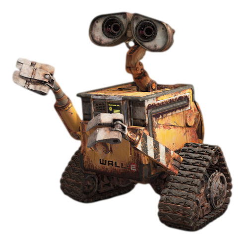

Tambem conhecida como "Pixar Animation Studios", é uma empresa de animação digital norte-americana, pertencente
à "Walt Disney Company". É especializada em alta tecnologia de computação gráfica.
Toy Story: É Conhecida por ser o primero longa metragem dos estúdios Pixar e tambem o primeiro da historia do cinema totalmente feito por computação grafica.
2001
Monstros S.A.: O filme conta a historia sobre monstros que assustam ciranças para conseguir seus gritos e gerar energia para o seu mundo.
2003
Procurando Nemo: Vencedor do Oscar de Melhor Filme de Animação, apresenta um mundo onde peixes e outros seres marinhos vivem numa numa semelhante à seres humanos.
2004
Os Incriveis: Foi indicado a 4 oscars, e venceu 2. Os quais foram: Melhor filme de Animação, e Melhor Edição de Som. Conta a historia de Beto e Helena Pera, seres humanos dotados de super poderes, que se casaram e agora têm três filhos: Violeta, Flecha, e o bebê Zezé, na cidade de Metroville.
2007
Ratatouille: Conta a Historia de Rémy, um rato vivendo em Paris qe sonha em se tornar um chef de cozinha.
Grupo de Pesquisa Pixar
O Grupo de Pesquisa Pixar foi criado em 2004 com o propósito de:
Desenvolver tecnologias
Promover a inovação
Fornecer consultoria
Participar de comunidades de pesquisas externas
Alguns Filmes Curta-Metragem da Pixar
Lou
Piper
Day & Night
Air Mater
Party Central
Galerias
Videos
Áudios
Carros 2:
DivertidaMente:
Imagens

WALL-E: Conta a História de um robô chamado WALL-E, criado no ano de 2100 para limpar a Terra coberta por lixo.
UP: Conta as aventuras que Carl (Um idoso viúvo com seu sonho de se mudar para o magnifico: Paraíso das Cachoeiras na Venezuela)
enfreta ao conhecer Russel (Um garoto escoteiro amante da natureza com seu sonho de protegê-la). Muntz (o explorador difamado buscando restabelecer sua reputação),
Kevin (a ave tropical) e Dug (um golden retriver falante)
VALENTE: Merida é uma habilidosa arqueira e a impetuosa filha do Rei Fergus e da Rainha Elinor. Determinada a trilhar o seu próprio destino. merida desafia um costume anceatral, se negando a casar com o promogênito de um dos quatro clãs.
Topo